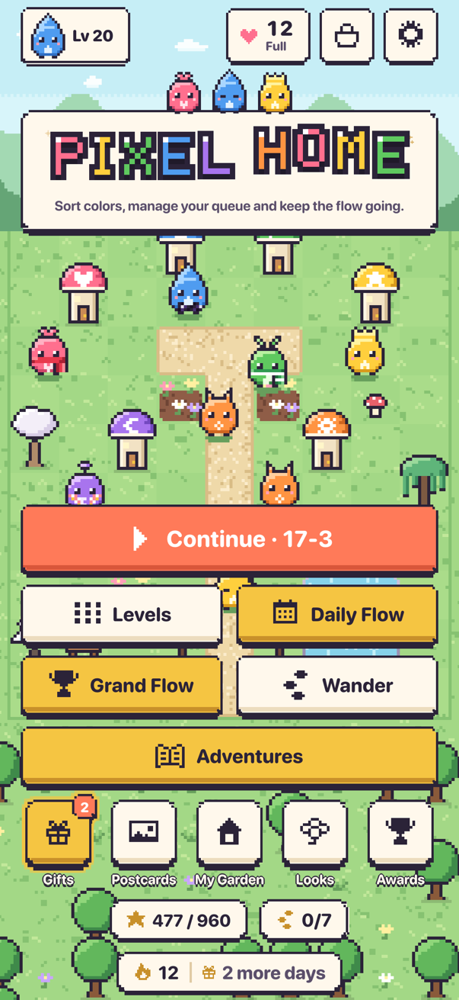
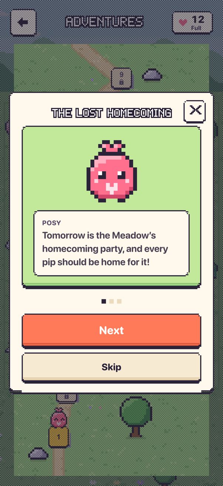
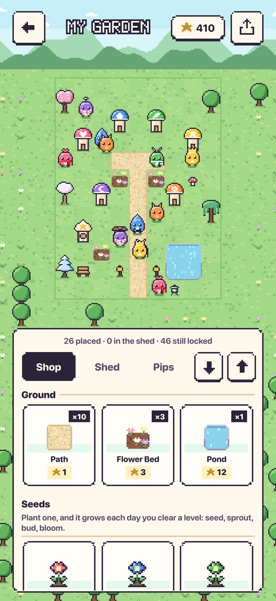
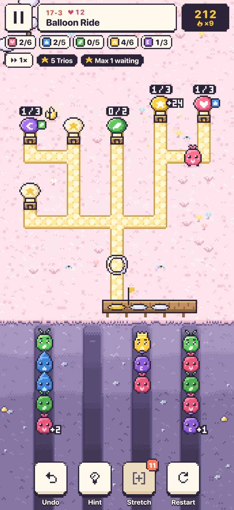
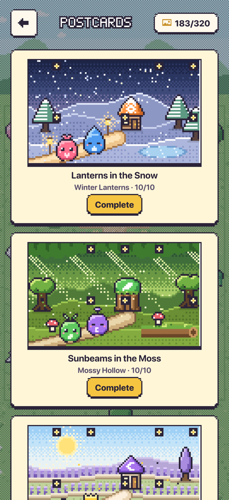

Ordena los colores, vigila la fila y lleva todos los pips a casa. Un acogedor puzle de pixel art para iPhone y iPad.
Descárgalo en el App StoreO prueba la Pradera y el Flujo diario de hoy en tu navegador.
English Deutsch Español Français Italiano 日本語 한국어 Nederlands Português (Brasil) Svenska ไทย 繁體中文





Juega el puzle de hoy sin instalar nada
Escanea el código con la cámara del iPhone para abrir el App Clip de Pixel Home: el Flujo diario en segundos, sin instalar nada. Si te gusta, el juego completo está a un toque.
El primero que entra es el primero que sale
Unas criaturitas llamadas pips esperan en sus madrigueras. Toca un pip para que salga. Si su casa está lista, va directo hacia ella. Si no, espera en la Fila de flujo, que avanza por estricto orden de llegada.
Cada casa acepta un solo color a la vez y la fila es corta, así que todo el puzle está en el orden que elijas. Planifícalo, mantén la fila en movimiento y llena todas las casas.
Conoce a los pips
En los jardines viven seis pequeños pips, cada uno con su color, su símbolo y su manía. Cada pip y cada casa lleva su símbolo, así que nunca tienes que distinguir los colores solo por el tono.
Posy
Siempre da la bienvenida · rosa, con un corazón
Posy creció en el seto de rosas al borde de la Pradera y desde entonces no se ha perdido ni una vuelta a casa. El corazoncito de su cabeza late más rápido cada vez que un pip llega a su propia puerta, y después de un buen Trío brilla el resto del día.
Dew
Pura calma · azul, con una gota
Dew llegó a la Ribera con la primera lluvia y le gustó tanto el sonido del agua que se quedó. Mientras los demás se impacientan en la Fila de flujo, Dew tararea con el arroyo y espera su turno sin prisa. La gota de su cabeza atrapa la luz de la mañana.
Sprig
Siempre explorando · verde, con una hoja
Sprig brotó de una semilla que alguien dejó caer en un camino del jardín y desde entonces lo husmea todo. Sus dos hojas tiemblan cuando hay algo nuevo cerca: un desvío que girar, un Rincón donde asomarse, un camino que nadie ha recorrido.
Sunny
Pura alegría · amarillo, con una estrella
Sunny encontró una corona de rayos de sol en la Cumbre Estrellada y no se la ha quitado ni una vez. Con mucha alegría, bastante ruido y un poquito de ganas de presumir, Sunny adora un Flujo largo más que nada, y la corona destella en cuanto empieza uno.
Luna
Se despierta con la luna · ciruela, con una luna
Luna pasa la parte más ajetreada del día durmiendo en un Rincón y se despierta cuando sale la luna. El orbe brillante de su antena ilumina los caminos de los jardines a la luz de la luna, para que ningún pip tenga que buscar su casa a oscuras.
Cinder
Valor y rapidez · ámbar, con una flor
Cinder bajó de la Cresta de Brasas con el calor de una chimenea y el doble de rapidez. Con esas orejas puntiagudas oye girar un desvío desde la otra punta del jardín. En algún escondite, Cinder guarda una flor prensada de la Pradera para recordar su primerísima casa.
Una historia para cada pip
Cada pip tiene además su propia aventura: ocho jardines y un final, con su historia en pequeñas viñetas pixeladas. Cada amigo que haces deja un recuerdo en tu jardín.
Un hogar propio
Cada estrella que ganas puedes gastarla en Mi jardín, el trocito de tierra detrás de la pantalla de inicio: casas, árboles y faroles de todos los mundos, caminos, estanques y parterres. Los pips que llevas a casa viven allí entre lo que colocas y lucen las bufandas y pajaritas que ganas. Los premios traen regalos como una fuente o un pip dorado, y puedes compartir una imagen de todo. Visitas al jardín: comparte un enlace y un amigo podrá recorrer tu jardín.
320 jardines, veintidós mundos
De la Pradera al Bosque de bambú, las ideas nuevas llegan poco a poco: desvíos que cambian el camino, Rincones donde un pip puede descansar, puertas de color, un Estirón que te presta un lugar más y Saltarines que se cuelan. Completa uno de los diez primeros mundos y se abrirá de nuevo a la luz de la luna, con jardines más difíciles en caminos que ya conoces. Cada una o dos semanas llegan jardines nuevos, sin esperar a una actualización.
Un puzle nuevo cada día
El Flujo diario es un jardín nuevo cada día, el mismo para todo el mundo, con su propia clasificación. ¿Te perdiste un día? Juega cualquiera de los últimos 30 desde el calendario y comparte tu resultado con tus amigos. Cada semana, el Gran Flujo trae un gran jardín con su propia clasificación.
Paseos sin fin
Al completar el tercer mundo se abre el Paseo: un camino sin fin de jardines, el mismo para todos, que poco a poco se vuelven más difíciles. Nunca cuesta una vida, y una clasificación muestra hasta dónde ha llegado cada uno.
A tu ritmo
Sin temporizadores en los niveles. Deshacer, pedir pistas y rebobinar hasta el último momento con solución siempre es gratis.
Vidas justas
Solo se gasta una vida si te rindes tras un atasco en un nivel nuevo. Las repeticiones, los Retos y el Flujo diario nunca cuestan una vida.
Para coleccionar
Consigue hasta tres estrellas por jardín, revela las Postales Pixel pieza a pieza, recoge un regalo diario, completa misiones diarias, gana recompensas por rachas y niveles de jardinería y desbloquea nuevos aspectos de jardín. Una tarjeta de sellos mensual, un viaje semanal y un regalo cuando vuelves.
Tuyo en todos tus dispositivos
Inicia sesión con Apple para guardar tu jardín en iCloud y continuar en cualquier iPhone o iPad. Las clasificaciones y los logros de Game Center están ahí si los quieres. Los widgets, los Atajos y una Actividad en Vivo tienen tu jardín siempre a la vista, y en el iPad también se juega en horizontal.
Juega gratis
Pixel Home es gratis. Las compras opcionales dentro de la app ofrecen vidas extra, 24 horas de vidas ilimitadas, potenciadores Estirón, el Pase del jardín (vidas ilimitadas y sin anuncios para siempre) y un Paquete de apoyo, un pequeño agradecimiento con decoraciones para tu jardín.
No recopilamos ningún dato que te identifique, y los anuncios nunca son personalizados para menores de 16 años. Lee la política de privacidad o visita la página de ayuda si necesitas que te echemos una mano.